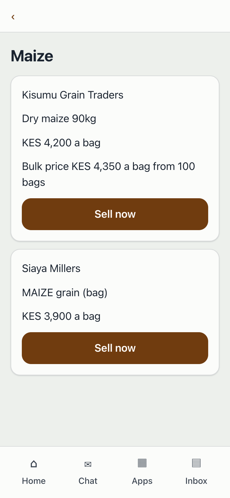
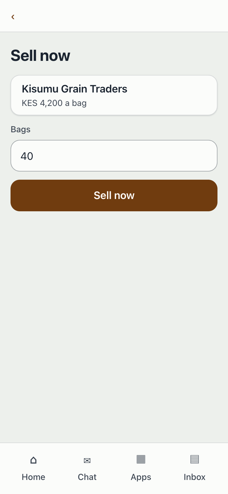
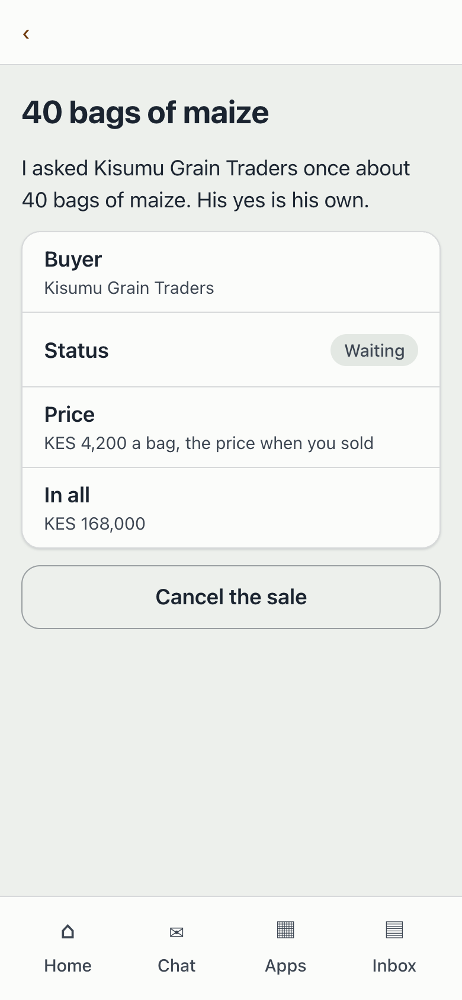
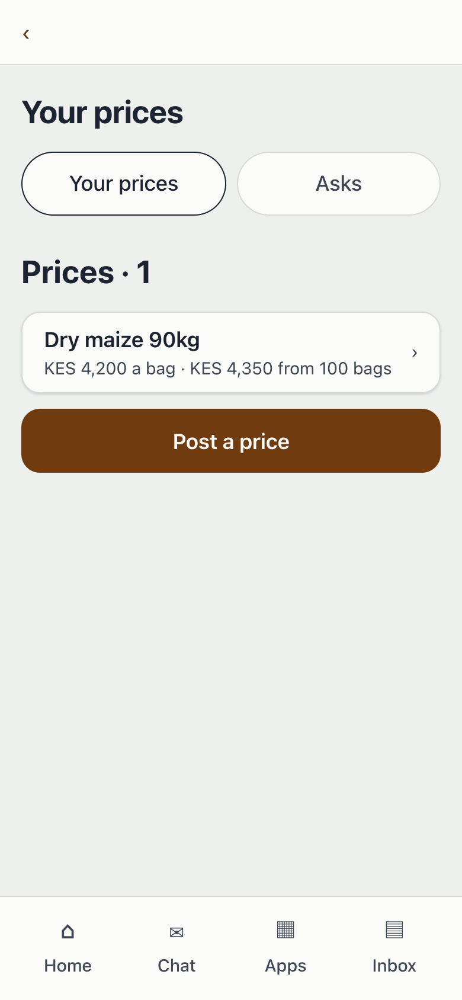

Sell the harvest: screenshots
Screenshots of the running member app on the local wakala-api with synthetic data. The Asks page, the ask and the sale after the buyer's yes are not captured yet.

1. Maize prices
Step 1: after Maize, the Farmers' agent answers with a card for each buyer's price and the open group sale.

2. The Sell now form
Step 1: the buyer's price and a Bags field, with one button, Sell now.

3. The sale waiting
Step 1: the sale shows Waiting because the buyer has not given a yes.

4. Your prices
Step 3: the buyer's Your prices page with the asks and the prices posted, and Post a price.